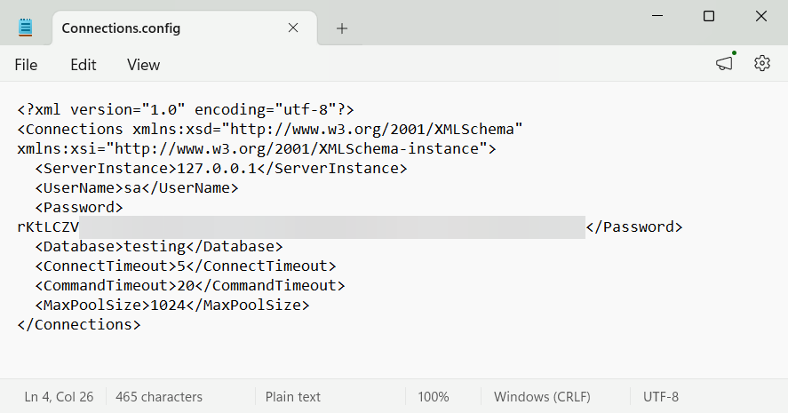
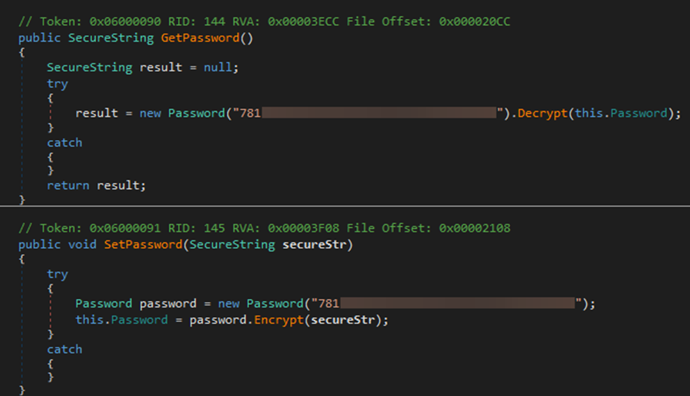
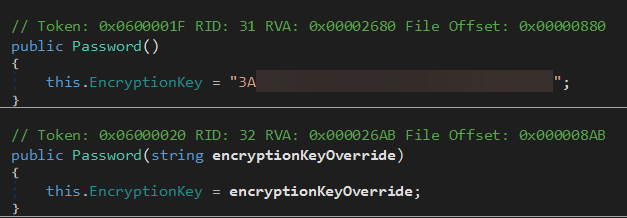
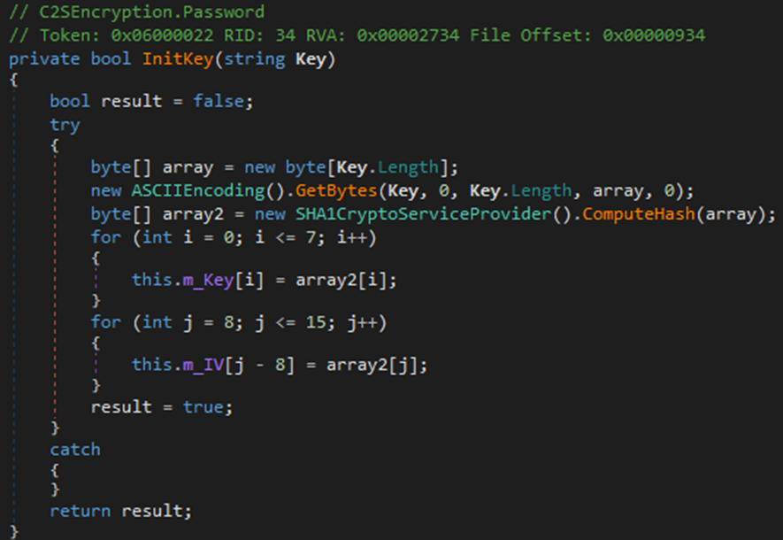
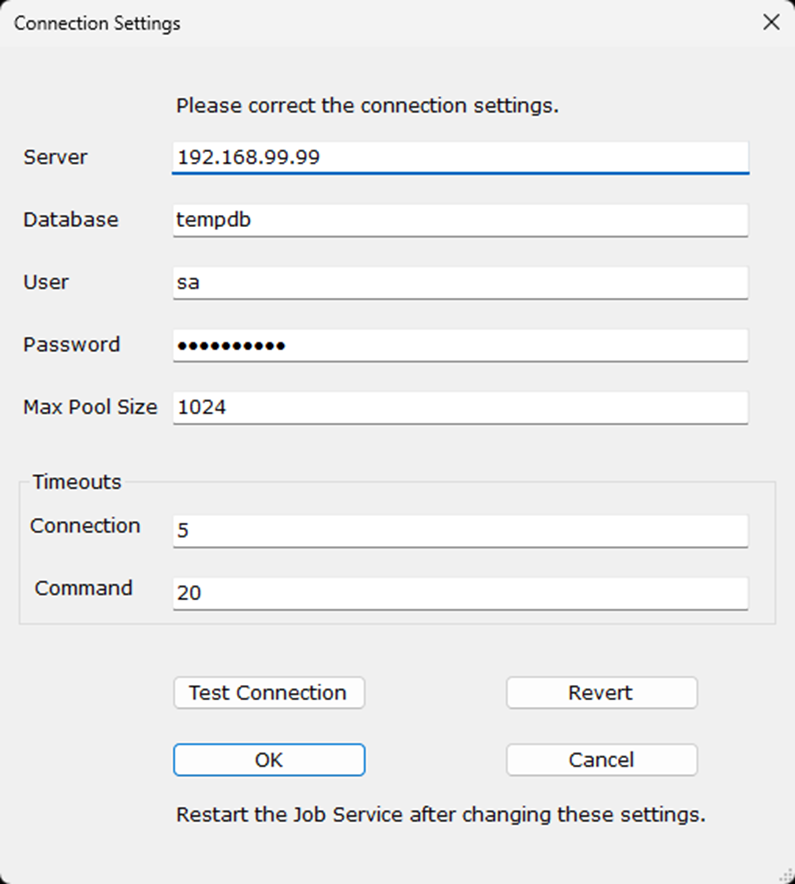
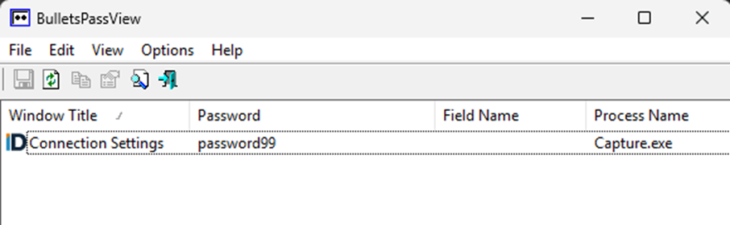
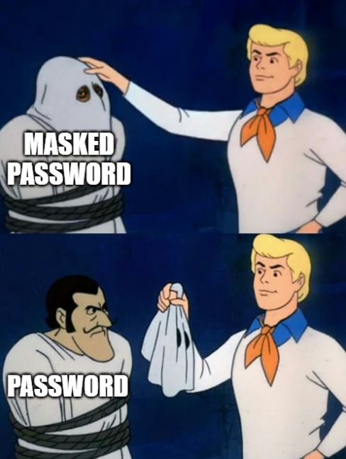
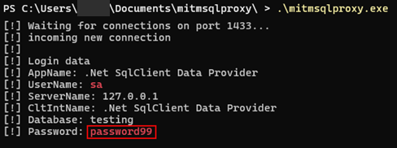
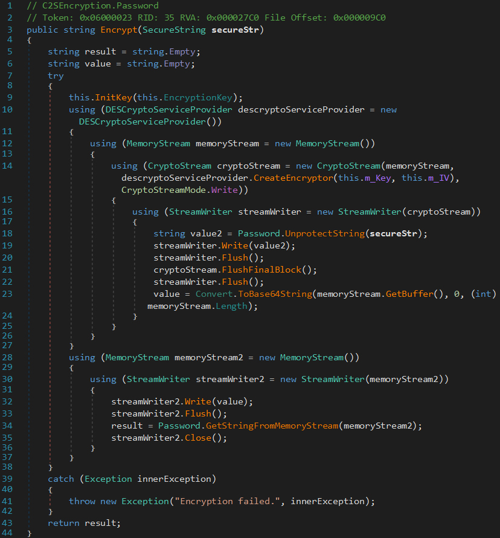
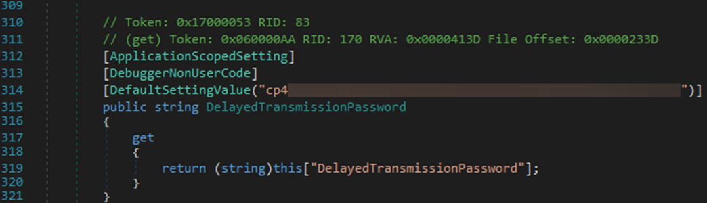

Cracking Codes, Capturing Credentials: Five CVEs in Milner ImageDirector Capture
Summary⌗
SRA encountered Milner ImageDirector Capture, a document scanning application, on a network penetration test. We identified and responsibly disclosed several vulnerabilities in this software. After the vendor provided a patch, we subsequently released five CVEs. This post explains the technical details of each CVE.
Introduction⌗
ImageDirector Capture is a .NET Windows application that manages scanned documents. Users access Capture by logging into one or more endpoint devices. The endpoints store database credentials and authenticate to a central MSSQL database for storage. While individual users can add documents to the server, they should not be able to extract database credentials from the application. We audited Capture’s source code with dnSpy.
Note: we used the sample credential sa:password99 for demonstration purposes.
Spicy Bytes: Hardcoded Encryption Key⌗
Capture uses stored credentials to connect to the database. It stores these credentials in C:\ProgramData\Comsquared\Capture\Connections.config.
It protects these credentials with encryption, but the GetPassword() and SetPassword() functions in C2SGlobalSettings.dll call the Password.Decrypt() function with a hardcoded key.
Looking at the definition of Password(), we see that the function defaults to a predefined key if it receives no input, and it uses the inline encryption key otherwise. We did not observe any instance where the application used this default key.
After accepting the key as an inline function argument, Password() passes it to InitKey, which splits the input into a key and IV for encryption.

The InitKey function is deterministic: all passwords are encrypted with the same key and IV. If an attacker were to extract this key from one installation of ImageDirector Capture, they could decrypt passwords from other deployments.
This finding was assigned CVE-2025-58740.
Taking Off The Mask: Insecure Masked Credential Fields⌗
In the Connection Settings dialog, ImageDirector Capture shows a field with the masked database password. Although the password is masked, it exists in the application’s memory as plaintext. We used the “Bullets Password View” tool from NirSoft to read these credentials.
Notably, we confirmed that the Connection Settings dialog was not vulnerable to this attack when manually launched from the Settings menu within the application. However, it was vulnerable when the application failed to connect to the database on initial load and subsequently loaded Connection Settings. We induced this state by setting the “ServerInstance” value in the program’s Connections.config file to a non-existent server address.



This finding was assigned CVE-2025-58741.
I’m The Server, Send Me Your Password: MSSQL Pass-Back⌗
Revisiting the Connection Settings dialog, we wondered what would happen if we changed the Server IP address to a different value: would the application attempt to login? Yes, it would! We were able to extract the database password by pointing ImageDirector Capture at a mitmsqlproxy instance. After clicking Test Connection, the application sent its credentials over the network.

This finding was assigned CVE-2025-58742.
Doesn’t Encrypt Securely: DES⌗
When we inspected the encryption function, we found that ImageDirector Capture uses the DES algorithm to encrypt and decrypt data. DES is insecure, and CISA recommends replacing it with a secure algorithm like AES-256.

This finding was assigned CVE-2025-58743.
All Your Backups Are Belong To Us: Hardcoded Credentials⌗
In addition to the hardcoded encryption key for passwords, the application contains a hardcoded password (the DelayedTransmissionPassword), which is used for encrypting and decrypting archive backup files. An attacker with access to encrypted archive files would be able to decrypt the files with the password and extract data.

This finding was assigned CVE-2025-58744.
Conclusion⌗
The multiple vulnerabilities in this software illustrate the importance of in-depth testing. We were pleased to see that the vendor took action to promptly remediate these vulnerabilities in response to our disclosure.
Timeframe⌗
- October 15-23, 2025 – SRA attempts to establish contact with Milner to disclose vulnerabilities.
- November 04, 2025 – Milner acknowledges vulnerabilities and intent to fix.
- December 31, 2025 – Milner releases ImageDirector Capture 7.6.3.25808.
- January 20, 2026 – SRA publishes CVEs and advisory.